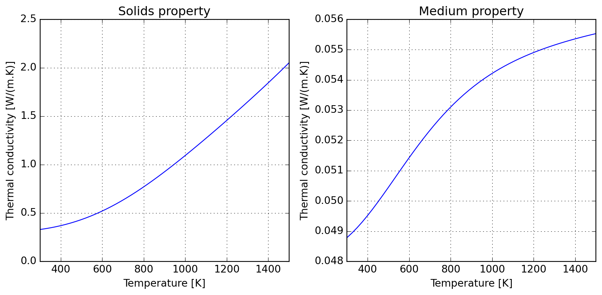
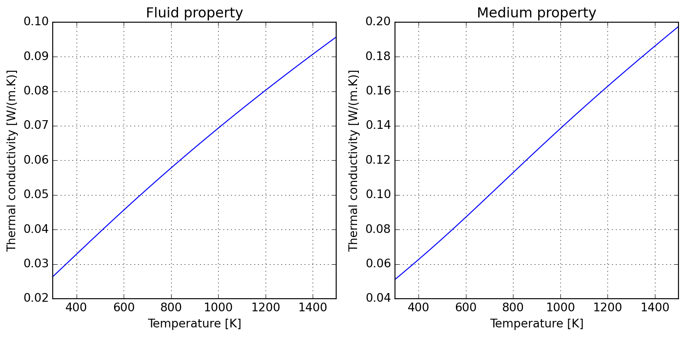
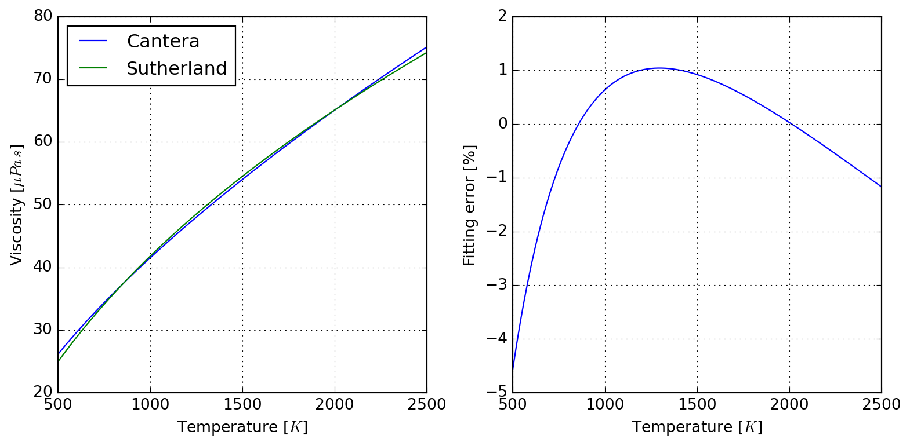
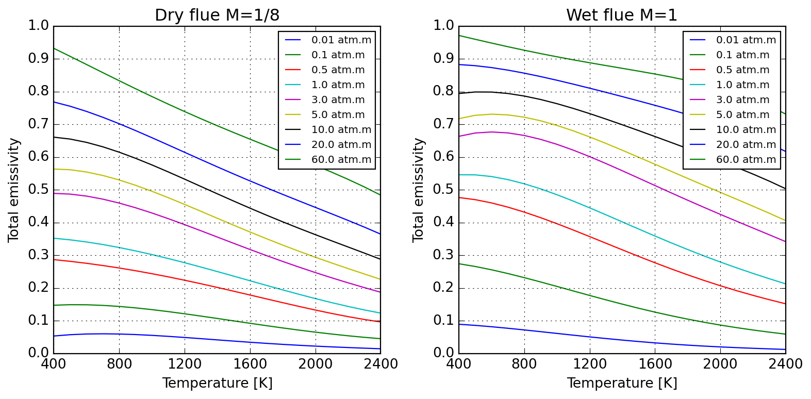
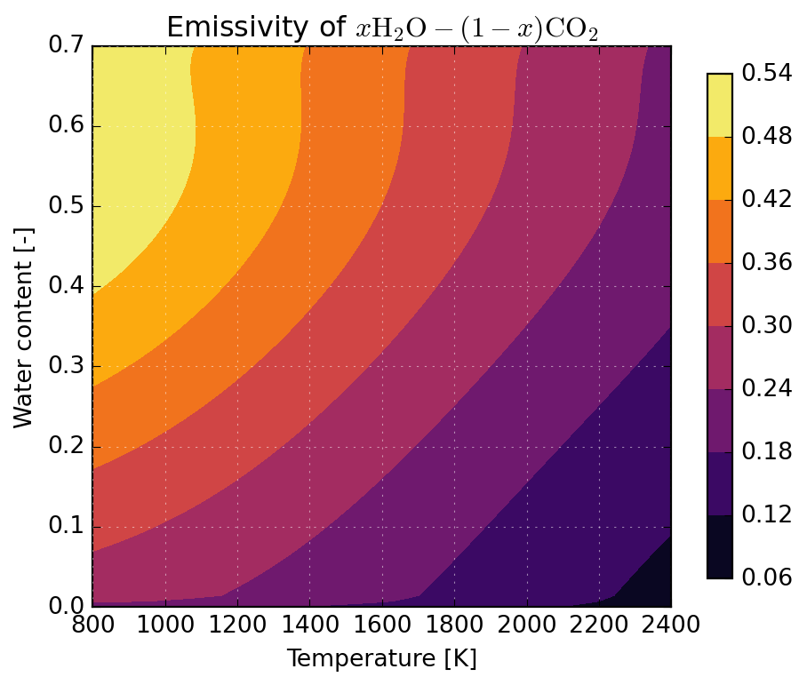

etc = EffectiveThermalConductivity()4 Transport properties
aka majordome_engineering.transport
4.1 EffectiveThermalConductivity
Class EffectiveThermalConductivity implements static methods for the evaluation of properties; its name is quite long, let’s start by getting an alias before evaluating the desired models:
Using Maxwell approximation, we could estimate the the effective thermal conductivity of a packed bed of particles in a matrix of air; assume particles loosly embeded in air and the following properties; the computed effective thermal conductivity is shown to approach the air limit:
phi = 0.30 # Loosely packed solids [30%v]
k_g = 0.025 # Air thermal conductivity [W/(m.K)]
k_s = 1.000 # Solids thermal conductivity [W/(m.K)]
etc.maxwell_garnett(phi, k_g, k_s)0.05396039603960396For the limit of high temperatures, it is usually important to account for particle-particle radiation heat transfer; this introduces a \(T^3\) dependence on temperature, as one should expect by linearizing Stefan-Boltzmann law.
Please notice that these models compute different things; while Maxwell approximation computes the medium properties (to approximate matrix-inclusion as a single domain), Singh’s model accounts only for solids properties. One might wish to combine them (warning: unverified validity!) to evaluate overall medium thermal conductivity. See the references in the class documentation for further discussion, specially the extension proposed by Kiradjiev (2019), which leads to a result similar to the assymptotic behavior displayed below.
d_p = 0.005
eps = 0.9
T = np.linspace(300, 1500, 50)
k_eff_s = etc.singh1994(T, phi, d_p, k_s, eps)
k_eff_m = etc.maxwell_garnett(phi, k_g, k_eff_s)
plot_etc((T, k_eff_s, k_eff_m)).resize(10, 5)
Due to kinetic theory implications, gas thermal conductivity tend to have a positive slope in temperature; the following illustrates how this can be accounted for and the roughly linear behaviour introduced when computing medium properties within air.
gas = ct.Solution("airish.yaml")
sol = ct.SolutionArray(gas, (T.shape[0],))
sol.TP = T, None
k_gas = sol.thermal_conductivity
k_eff_m = etc.maxwell_garnett(phi, k_gas, k_eff_s)
plot_etc((T, k_gas, k_eff_m)).resize(10, 5)
4.2 SolutionDimless
A dimensionless numbers calculator is provided for gas flows; it currently has a certain number of groups which are all evaluated by definition (which might change according to your field, please check the docs). The mechanics of using the class can be resumed to:
- loading a mechanism file (Cantera YAML)
- setting the state of the solution
- evaluating the required properties
- (optional) displaying a report
The meaning of the tuple of arguments provided to set_state is specified by tuple_name="TPX", which defaults to temperature, pressure, and molar proportions. Any triplet allowed by Cantera can be specified here.
Tw = 1000.0 # Wall temperature [K]
U = 10.0 # Characteristic velocity [m/s]
D = 0.05 # Pipe diameter [m]
L = 1.0 # Pipe length [m]
calculator = SolutionDimless("airish.yaml")
calculator.set_state(300.0, 101325.0, "N2: 1", tuple_name="TPX")
Re = calculator.reynolds(U, D)
Pr = calculator.prandtl()
Sc = calculator.schmidt()
print(calculator.report())-------- ------------ ---------------
Reynolds 31460.9 U=10.0, L=0.05
Prandtl 0.709327
Schmidt 0.761752 mix_diff_coeffs
-------- ------------ ---------------If you prefer to have direct access to the internal solution, you can set properties as usual in Cantera, but you need to keep in mind to call update() to refresh the internal state of the calculator. Every time the properties are updated, the internal buffer of computed dimensionless numbers is refreshed, as you migth notice in the following table.
calculator.solution.TPX = 300.0, 101325.0, "N2: 1"
calculator.update()
Pe_m = calculator.peclet_mass(U, L)
Pe_h = calculator.peclet_heat(U, L)
Gr = calculator.grashof(Tw, D)
Ra = calculator.rayleigh(Tw, D)
print(calculator.report())------------- ---------------- ------------------------------
Péclet (mass) 479308 U=10.0, L=1.0, mix_diff_coeffs
Péclet (heat) 446321 U=10.0, L=1.0
Grashof 1.13242e+07 Tw=1000.0, H=0.05, g=9.80665
Rayleigh 8.03259e+06 Tw=1000.0, H=0.05, g=9.80665
------------- ---------------- ------------------------------4.3 SutherlandFitting
To the author’s knowledge, there is no standard tool to convert Cantera transport data to Sutherland parameters for use with OpenFOAM, what led to the motivation to develop SutherlandFitting. This simple class wraps a Cantera solution object, which it makes use for fitting Sutherland parameters to export as a table (to be used elswhere), and also allows for retrieving a converted database in OpenFOAM compatible format. The following example should be self-explanatory:
T = np.linspace(500, 2500, 100)
sutherland = SutherlandFitting("airish.yaml")
sutherland.fit(T, species_names=["O2", "N2"])
coef = sutherland.coefs_table
coef| species | As [uPa.s] | Ts [K] | RMSE [uPa.s] | |
|---|---|---|---|---|
| 0 | O2 | 1.873876 | 229.321211 | 0.527484 |
| 1 | N2 | 1.619350 | 226.141806 | 0.470152 |
If needed, it is also possible to have direct access to the viscosity data used in parameter fitting:
sutherland.viscosity.head()| T | O2 | N2 | |
|---|---|---|---|
| 0 | 500.000000 | 30.045456 | 26.123142 |
| 1 | 520.202020 | 30.886884 | 26.845049 |
| 2 | 540.404040 | 31.713820 | 27.554780 |
| 3 | 560.606061 | 32.527146 | 28.253075 |
| 4 | 580.808081 | 33.327662 | 28.940602 |
Because RMSE compresses all the error in a single value, you can check graphically where the deviations happen in the interval:
plot = sutherland.plot_species("N2")
Finally, it also responds to its initial goal of exporting values in OpenFOAM format:
print(sutherland.to_openfoam())
/* --- RMSE 0.5274842993902649 ---*/
"O2"
{
transport
{
As 1.8738763185e-06;
Ts 2.2932121082e+02;
}
}
/* --- RMSE 0.4701517988286822 ---*/
"N2"
{
transport
{
As 1.6193495479e-06;
Ts 2.2614180620e+02;
}
} 4.4 WSGGRadlibBordbar2020
Radiative properties of gases are often required when participating media characteristics imply so. Here we implement the WSGG model of Sadeghi et al. (2021) in class WSGGRadlibBordbar2020. The basic usage of the model to estimate total emissivity is done as follows:
model = WSGGRadlibBordbar2020()
model(L=1, T=1000, P=101325, x_h2o=0.18, x_co2=0.08, fvsoot=0.0)np.float64(0.18368577452587137)4.4.1 Validation of Bordbar WSGG implementation
Evaluation of the model against original source of Bordbar (2014) is satisfactory, as follows:

Absorption coefficients for pure substances only reproduce approximately values reported by Bordbar (2020).
model(L=1, T=300, P=101325, x_h2o=0, x_co2=1)
model.absorption_coefs[1:]array([3.388079e-02, 4.544269e-01, 4.680226e+00, 1.038439e+02])model(L=1, T=300, P=101325, x_h2o=1, x_co2=0)
model.absorption_coefs[1:]array([ 0.07703541, 0.8242941 , 6.854761 , 65.93653 ])4.4.2 Application to radiative combustion
Below we illustrate the application of WSGGRadlibBordbar2020 to predict the emissivity of \(x\mathrm{H_2O}-(1-x)\mathrm{CO_2}\) mixtures over a broad temperature range applicable to the analysis of combustion processes. One observes an important participation of flue gases, especially at lower temperatures.
wsgg = WSGGRadlibBordbar2020()
@np.vectorize
def emissivity(T, X, L=1, P=101325):
return wsgg(L=L, T=T, P=P, x_h2o=X, x_co2=1-X, fvsoot=0.0)
T = np.linspace(800, 2400, 100)
X = np.linspace(0, 0.7, 100)
T, X = np.meshgrid(T, X)
eps = emissivity(T, X)
plot_emissivity(T, X, eps)
Sadeghi, Hosein, Simo Hostikka, Guilherme Crivelli Fraga, and Hadi Bordbar. 2021. “Weighted-Sum-of-Gray-Gases Models for Non-Gray Thermal Radiation of Hydrocarbon Fuel Vapors, CH4, CO and Soot.” Fire Safety Journal 125 (October): 103420. https://doi.org/10.1016/j.firesaf.2021.103420.